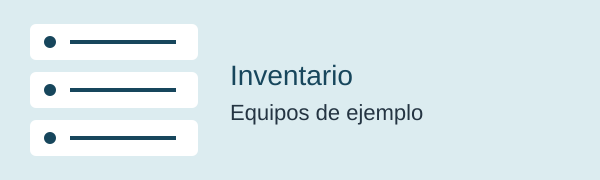
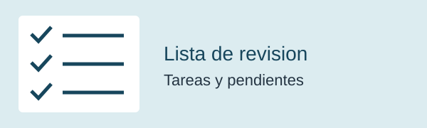

Gestión de fibra óptica
Organización y seguimiento de las tareas del área de fibra.
Trabajo con fibra óptica y aprendo desarrollo web
Trabajo con fibra óptica en el entorno de PCCS, en Manta. En este espacio compartiré mi experiencia y los ejercicios que vaya realizando mientras aprendo HTML y CSS.
Conoce un poco sobre míSoy Cesar Leonardo Garcia Macias y trabajo en Manta, en el área de fibra óptica vinculada a PCCS (Pacific Caribbean Cable System). Mis tareas están relacionadas con la gestión y el mantenimiento. Me interesa conocer cómo funcionan las redes y aprender a crear páginas web. Mi objetivo es aplicar lo que aprendo para organizar y presentar mejor mi trabajo.
Organización y seguimiento de las tareas del área de fibra.
Revisión y cuidado de los elementos de la red de fibra óptica.
Registro de pendientes y planificación de las actividades diarias.
Comunicación con los compañeros para coordinar el trabajo.
Ejercicios personales de HTML y CSS inspirados en tareas de mantenimiento de fibra óptica. Usan datos ficticios y no son sistemas oficiales de PCCS.

Una tabla para organizar el código, el nombre y el estado de equipos de ejemplo.
| Código | Equipo | Estado |
|---|---|---|
| DEMO-01 | Panel de conexiones | Revisado |
| DEMO-02 | Distribuidor óptico | Pendiente |
| DEMO-03 | Cable de conexión | Revisado |
Un formulario de práctica para anotar el equipo, la fecha y las observaciones de una revisión.
Puedes llenar la ficha y limpiarla. Los datos no se guardan ni se envían.

Una lista para practicar cómo organizar y marcar las tareas de un registro de revisión.
Ejemplo de organización de tareas, no un procedimiento técnico de PCCS. Las marcas no se guardan.
Formulario de práctica. El botón es demostrativo y no envía mensajes.